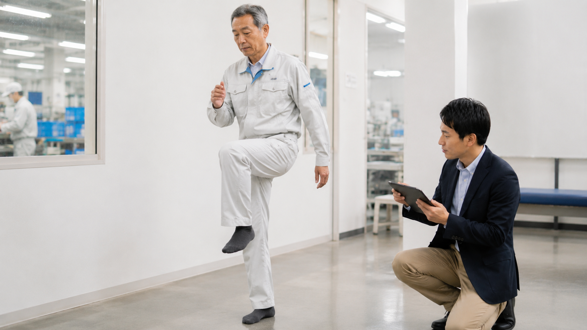

職場動作の確認
介助、運搬、立ち作業、デスクワークなど、日常業務の姿勢や動作を現場で確認します。
- 中腰・前かがみ・ひねり動作の確認
- 作業導線や荷物の扱い方の確認
- 身体負担が高まりやすい場面の整理
サービス内容
札幌 健康経営 サポート、北海道 健康経営 支援として、理学療法士の視点で作業動作・職場環境・従業員の身体機能を総合的に確認します。
介助、運搬、立ち作業、デスクワークなど、日常業務の姿勢や動作を現場で確認します。

筋力、柔軟性、バランス、歩行など、働くうえで必要な身体機能を確認します。
身体面と環境面の両方から、腰痛・転倒・ケガにつながりやすい要因を整理します。
現場で続けやすいストレッチ、筋力トレーニング、腰痛・転倒予防の体操を提案します。
導線、作業姿勢、備品配置、休憩の取り方など、負担軽減につながる工夫を提案します。
腰痛予防、転倒予防、疲労対策、姿勢改善などをテーマに、従業員向け研修を実施します。
次のステップ